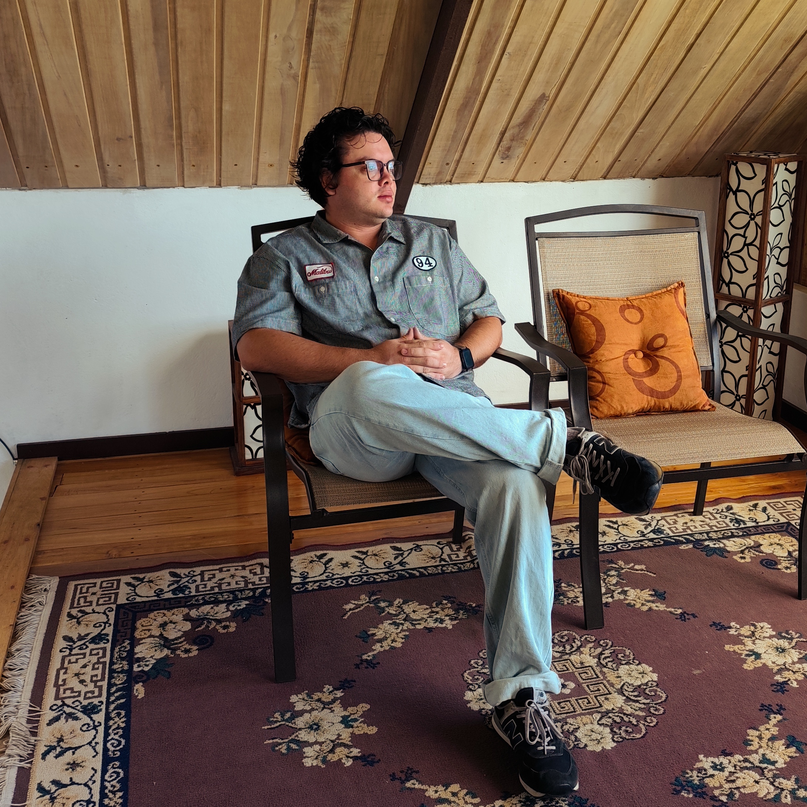

Driving technological innovation through research in embedded systems, artificial intelligence, and hardware-software co-design.
The Efficient Computing Across the Stack Lab (ECAS Lab) is a research and innovation space at the Costa Rica Institute of Technology (TEC). Our team is composed of students and researchers dedicated to exploring the intersection between hardware and advanced software.
In the laboratory, we have various assistants and student projects from the Computer Engineering, Computer Science, and Electronic Engineering programs. All of this is supported by professors and researchers with years of academic and professional experience.
Explore our research and development initiatives. Each project reflects our commitment to technological innovation, solving complex problems through advanced hardware and software design.
This project focuses on the design and synthesis of highly efficient hardware interpolation blocks using High-Level Synthesis (HLS) methodologies. Its goal is to accelerate complex nonlinear functions with high precision and minimal resource consumption in reconfigurable devices.
View RepositoryConsists of the implementation of processing cores (softcores) based on the open RISC-V instruction set, entirely developed through High-Level Synthesis (HLS) flows for custom embedded microcontrollers.
View RepositoryDevelopment of a configurable Python interface enabling the integration of FPGA hardware accelerators with PyTorch AI models, validated with LeNet-5 on MNIST and MobileNetV2 on ImageNet-1K.
View RepositoryExplores hardware-software co-design for optimized tensor processing units in FPGAs, focusing on mixed-precision matrix multiplication and sparse computing.
View RepositoryResearch and development of an efficient and adaptable hardware-software architecture for Large Language Models (LLMs) inference on FPGA devices, targeting edge computing.
View RepositoryThis project investigates and develops a hardware/software co-design solution to accelerate computationally critical stages of Simultaneous Localization and Mapping (SLAM) algorithms on low-cost FPGA systems using High-Level Synthesis (HLS) and fixed-point arithmetic optimization.
View RepositoryThis project proposes the design and co-design of a Floating-Point Unit (FPU) with dynamic configuration and fine granularity over operand lengths. Integrating SIMD vector capabilities, it optimizes AI workloads and serves as an advanced design space exploration platform in RISC-V architectures.
View RepositoryFocuses on the design and implementation of arithmetic blocks optimized using truncated lookup tables (TLUT) and Horner's polynomial evaluation scheme to accelerate nonlinear functions and mathematical approximations with reduced hardware resource consumption.
View RepositoryConsists of the RTL-level incorporation and validation of coprocessors and specialized functional units (such as transprecision FPUs and tensor units) within an open-source RISC-V processor core, evaluating custom instruction decoding and overall performance impact.
View RepositoryThis project presents CAMTA (Configurable Multi-Region Activation Unit), a high-performance, low-power hardware architecture for efficient nonlinear function acceleration in AI workloads. Using multi-region polynomial approximation, Horner's rule, and a pipelined datapath, it allows runtime configuration of coefficients, region limits, and symmetry modes (such as GeLU, tanh, sigmoid, Swish/SiLU) without hardware resynthesis, validated on AMD Alveo U55C FPGAs and edge ASIC flows.
View RepositoryPresents the design, integration, and validation of an instruction classifier module inside the CV32E40P RISC-V pipeline (PULPissimo SoC on Nexys A7-100T FPGA). It deterministically counts retired instructions across 13 categories exposed via CSR registers, paired with an INA228 high-precision power measurement bench and validated against BEEBS workloads with an RMSE error under 0.13%.
View RepositoryExplore our peer-reviewed research papers and academic contributions in embedded systems and sustainable computing.
Luis G León-Vega, Alex Chacón-Rodríguez, Eduardo Salazar-Villalobos, Jorge Castro-Godínez
2023/11/28
Abstract: Investigates the use of FPGAs and Strassen matrix multiplication to accelerate fully connected Deep Learning layers in energy-constrained edge environments.
View PublicationLuis G León-Vega, Niccolò Tosato, Stefano Cozzini
2024/9/30
Abstract: Proposes novel mathematical models and tools to robustly estimate non-exclusive process energy consumption in multi-socket HPC systems with GPUs.
View PublicationAnthony Leiva-Valverde, Fabricio Elizondo-Fernández, Luis G León-Vega, Cristina Meinhardt, Jorge Castro-Godínez
2026/2/24
Abstract: Evaluates approximate computing techniques (Taylor series and LUT interpolation) to accelerate the softmax function on low-end FPGAs while maintaining numerical precision.
View PublicationLuis G. León-Vega, Eduardo Salazar-Villalobos, Jorge Castro-Godínez
2022
Abstract: Explores the automatic generation of GEMMA processing elements using High-Level Synthesis (HLS), analyzing the impact of precision configuration and matrix size on resource usage.
View PublicationLuis G Leon-Vega, Eduardo Salazar-Villalobos, Alejandro Rodriguez-Figueroa, Jorge Castro-Godinez
2023/7/24
Abstract: Proposes a framework to automatically generate synthesis-time configurable processing elements for matrix multiplication and convolution at the edge.
View PublicationLuis G Leon-Vega, Erick Obregon-Fonseca, Jorge Castro-Godinez
2024/7/29
Abstract: Introduces a user-friendly ecosystem featuring a library of pre-built accelerators and an agnostic API to facilitate FPGA usage in embedded Artificial Intelligence.
View PublicationLuis G León-Vega, Jorge Castro-Godínez
2023/6/27
Abstract: Presents a configurable accelerator architecture in C++ for matrix multiplication-addition operations designed to overcome power limitations in edge devices.
View PublicationLuis D Prieto-Sibaja, Luis G León-Vega, Indra León-Vega, Jorge Castro-Godinez, Stefano Cozzini
2024/11/27
Abstract: Compares resource consumption and latency between two distinct FPGA architectures aimed at efficiently accelerating Large Language Models (LLMs).
View PublicationLuis G León-Vega, Diego Avila-Torres, Indra León-Vega, Jorge Castro-Godínez
2024/11/18
Abstract: Presents CYNQ, a simplified, API-agnostic C/C++ runtime library that outperforms traditional libraries on AMD FPGAs while offering high ease of use.
View PublicationLuis G León-Vega, Niccolò Tosato, Stefano Cozzini
2024/9/30
Abstract: Introduces EfiMon, an agnostic and non-invasive tool designed to extract detailed process execution data to predict granular power consumption in supercomputers.
View PublicationLuis G Leon-Vega, David Cordero Chavarria, Jorge Castro-Godinez
2023/3
Abstract: Describes a template-based C++ software suite for Convolutional Neural Network inference, allowing modular replacement of arithmetic units for approximate computing.
View PublicationLuis Gerardo León-Vega, Jorge Castro-Godínez
2022/11/1
Abstract: Measures the impact of multi-threading and approximate computing (frame skipping) to accelerate a traffic metering system on edge computing devices.
View PublicationEdgar Chaves González, Luis Gerardo León Vega
2022
Abstract: Explores the performance of the NXP i.MX8M Plus NPU through a smart parking case study, demonstrating a drastic reduction in CPU load.
View PublicationDavid Cordero-Chavarria, Luis G León-Vega, Jorge Castro-Godinez
2024/11/27
Abstract: Proposes configurable approximate arithmetic operators described in C++ for HLS, evaluating their impact on classification neural network model accuracy.
View PublicationEduardo Salazar Villalobos, Jorge Castro Godínez, Luis Gerardo León Vega
2022
Abstract: Investigates edge machine learning acceleration by offloading computations to FPGAs and using approximate computing to optimize hardware resource utilization.
View PublicationAndrés Carrillo-Arroyo, Anthony Leiva-Valverde, Roger Morales-Monge, Emilio Soto-Porras, Luis G León-Vega, Jorge Castro-Godínez
2026/5/26
Abstract: Provides a unified analysis comparing a CORDIC-based softmax accelerator against Taylor- and LUT-based approximate designs on cloud-scale FPGA platforms.
View PublicationLuis Gerardo León-Vega
2022/12/8
Abstract: Proposes an open-source framework with libraries for the automatic generation of vectorized processing elements and generic accelerators for low-end FPGAs.
View PublicationE Burner, C Lam, JZ Godinez, C Olmos, MT Rincon, C Pelico, L Vega, A Garcia, R Lui, E Johnson, T Abramson
2026/10/1
Abstract: Studies how community-level immigration enforcement and policy changes decrease patient participation in emergency and acute care research settings.
View PublicationCarlos Soto-Porras, Jose Fonseca-Cruz, Pablo Ramirez-Morera, Erick Obregon-Fonseca, Luis G Leon-Vega, Jorge Castro-Godinez
2026/8/4
Abstract: Introduces CAMTA, a 16-bit reconfigurable multi-region activation unit based on Horner's method for nonlinear function approximation in FPGA and ASIC accelerators.
View PublicationRoger Morales-Monge, Nazareth Jimenez-Chacon, Jose Gabriel Villalobos-Alvarado, Luis G Leon-Vega, Jorge Castro-Godinez
2026/8/4
Abstract: Proposes a partial reconfiguration-based PWL interpolation framework to significantly reduce hardware costs for non-linear functions in LLM workloads.
View PublicationLuis G Leon-Vega, Leonardo Cardinale-Villalobos, Christopher Vega-Sánchez, Maickol Fernandez-Obando, Luis Diego Murillo-Soto
2026/6
Abstract: Presents an integrated IoT and thermal imaging framework to experimentally evaluate passive cooling systems in urban photovoltaic modules.
View PublicationMoisés Leiva-Solano, Carlos Quirós, Nagel Mejía-Segura, Luis G León-Vega, Jorge Castro-Godínez
2026/5/26
Abstract: Explores approximate logic synthesis on FPGAs by adapting ASIC-oriented frameworks and evaluating post-mapping bit truncation strategies.
View PublicationMaickol Fernandez-Obando, Luis G. Leon-Vega, Leonardo Cardinale-Villalobos, Christopher Vega-Sanchez, Luis D. Murillo-Soto
2026/4/8
Abstract: Designs and implements a robust Raspberry Pi 4-based data acquisition system for comparative performance analysis of solar panels featuring different cooling systems.
View PublicationKendall Rivera-Solano, Luis G León-Vega, Erick Carvajal Barboza, Jorge Castro-Godínez
2026/2/24
Abstract: Proposes a machine learning-based approach to predict errors introduced by gate elimination, reducing costly simulations during approximate logic synthesis.
View PublicationLuis Gerardo Leon Vega
2026/1/20
Abstract: Doctoral dissertation focused on sustainable computing through detailed fine-grained energy profiling in supercomputers (EfiMon) and reconfigurable FPGA-based accelerators.
View PublicationMeet the professors, researchers, assistants, and students who drive our work in hardware-software co-design, reconfigurable computing, and efficient artificial intelligence.
Professor and Researcher
Electronic Engineering
Professor and researcher in the Electronic Engineering Unit at the Costa Rica Institute of Technology (TEC), San Carlos. Tech Lead at RidgeRun Engineering, with experience in high-performance computing and sustainable computing.
Professor and Researcher
Electronic Engineering
Specializes in embedded systems and firmware development. He has an extensive background in academia at the Tecnológico de Costa Rica and the Karlsruhe Institute of Technology (KIT), where he also earned his Ph.D. in Computer Science.
Assistant and Researcher
Computer Engineering
Graduated from Computer Engineering and is currently pursuing a master's degree in Electronics with an emphasis on microelectronics.
Assistant
Electronic Engineering
Passionate about continuous learning and exploring new topics. Curiosity drives me to take on new challenges, experiment, and put what I have learned into practice.

Project collaborator
Computer Engineering
Undergraduate student in Computer Engineering at the Costa Rica Institute of Technology (TEC). Possesses prior experience in software support and mission-critical system infrastructure, with a particular interest in computer architecture, digital design using HDL/SystemVerilog, and embedded systems.
Send us a message and we will respond to your email.